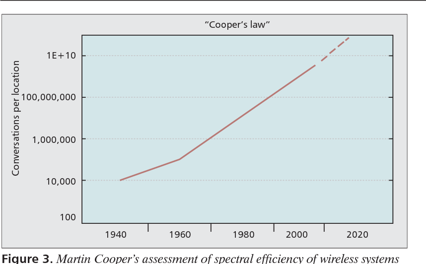
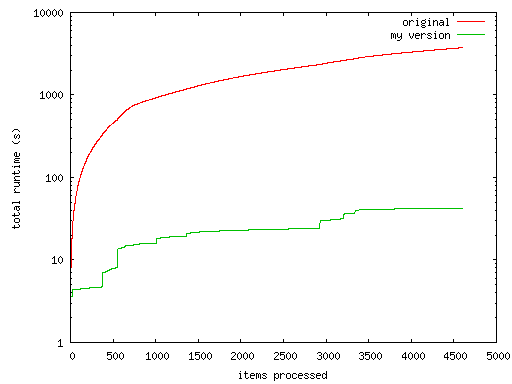
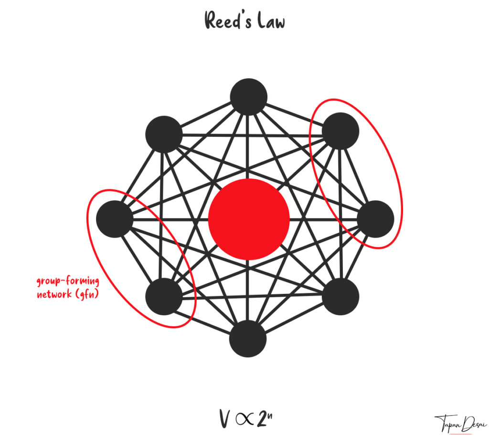

Moore's Law
The numbers of transistors which manufacturers are able to miniaturize and place on a standard chip doubles approximately every 18 to 24 months. Moore first made the observation in 1965, and his observation has held true to this day. In 1965 computers had thousands of transistors, today each computer chip contains billions of transistors.

Source
Kryder's Law
The number of storage sites on media increases by 10x every 18 months. Manufactures have been able to increase Hard-drives to allow them to hold more information. Smaller size and bigger capacity. "Today the density of information we can get on a hard drive is much more important to enabling new applications than advances in semiconductors." Kryder
Source
Butter’s Law of Photonics
The amount of data coming out of an optical fiber is doubling every nine months. The cost of transmitting a bit over an optical network decreases by half every nine months. Companies aren't able to install new fiber optic fast enough to keep up the acceleration of Butter's law. Despite this, wired connections have seen a steady increase in transmission speeds and capacities.
Source
Cooper's Law
The number of wireless signals that can simultaneously be transmitted without interfering with each other has been doubling approximately every 30 months since the early 1900s.
Source
Wirth's Law
Wirth's law is an adage on computer performance which states that software is getting slower more rapidly than hardware is becoming faster
Source
Reed's Law
Reed's law is the assertion of David P. Reed that the utility of large networks, particularly social networks, can scale exponentially with the size of the network. The reason for this is that the number of possible sub-groups of network participants is 2ᴺ − N − 1, where N is the number of participants
